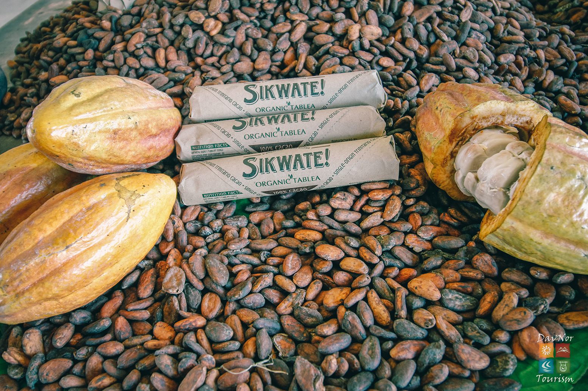
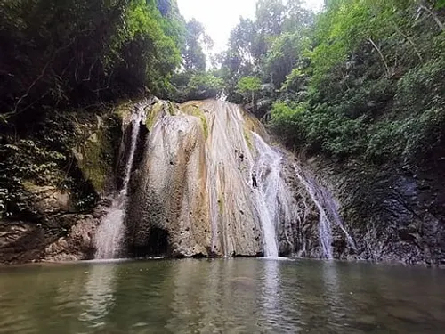
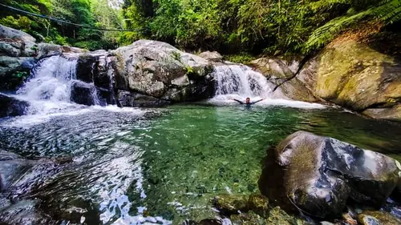
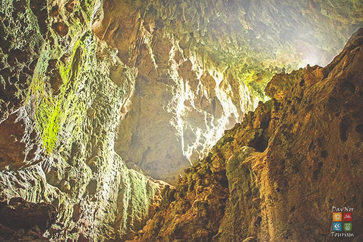

MUNICIPALITY OF SAN ISIDRO
Land of “brown gold”, caves and waterfalls
The Municipality of San Isidro is a 5th-class municipality in the province of Davao del Norte, Philippines, with an abundance of eco-cultural wonders and one of the quickest eco-tourism sites withinside the province and a getaway for fun, thrill, learning, and adventure. It has a population of 27,233 people according to the 2020 census. San Isidro was created on June 26, 2004, after the ratification of Republic Act (RA) No. 9265. On June 2, 2022, RA No. 11814, the act renaming San Isidro as Sawata, as well as it's municipal proper, Barangay Sawata as Poblacion, lapsed into law.

Tableya/Cacao
San Isidro is famous for its ‘tableya’, round-shaped finished product of dried cacao beans which may have been the main ingredient of one’s favourite chocolate. But beyond its progressing cacao industry, eco-tourism sites also flourish.

Tagtugunan Falls
Tugtuganan Falls has a very deep catchment pool, surrounded by lush forest trees and vines it was a very nice place to stay and relax. Water was clear that day and everyone started to take a dip and swam crossed the deep pool just to be underneath the gushing water of the falls. Some participants did not cross the pool as they do not know how to swim. They just sat on the bank and fresh their body from the stream of cold water coming from the falls.

Sambulawan Falls
Sambulawan Falls, a magnificent three-tiered waterfall, is a prominent natural attraction located in San Isidro, Davao del Norte. This stunning cascade is situated in close proximity to other notable sites, including the Kabyawan Cave and Tagtugunan Falls, making it a key stop within the area's rich eco-tourism offerings. The falls derive their name from the beautiful Sambulawan tree, a species that flourishes in the vicinity, adding to the site's unique natural charm. San Isidro is not only recognized for its waterfalls but also for its world-class cacao products and intriguing cave systems, collectively contributing to the town's appeal as a diverse eco-tourism destination.

Kabyawan Cave
Kabyawan Cave, situated in Dakudao, San Isidro, Davao del Norte, Philippines, is a notable destination for those seeking underground exploration. This cave system offers unique opportunities for spelunking and discovering the subterranean wonders of the region. Recognizing its potential and the importance of safety, Kabyawan Cave has become a significant site for training programs aimed at developing skilled caving guides. These programs focus on ensuring that exploration is conducted safely and that the cave's delicate ecosystem is properly managed and preserved for future generations.
Reference: davaodelnorte-san-isidro